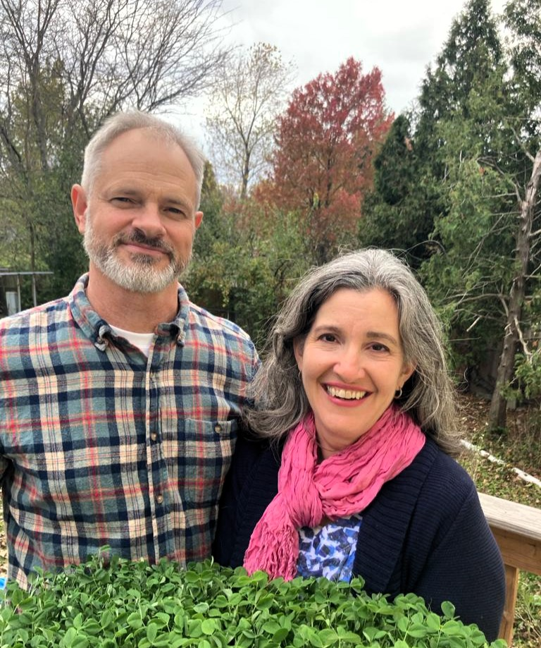
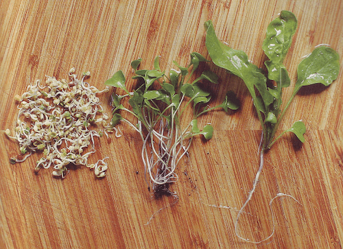
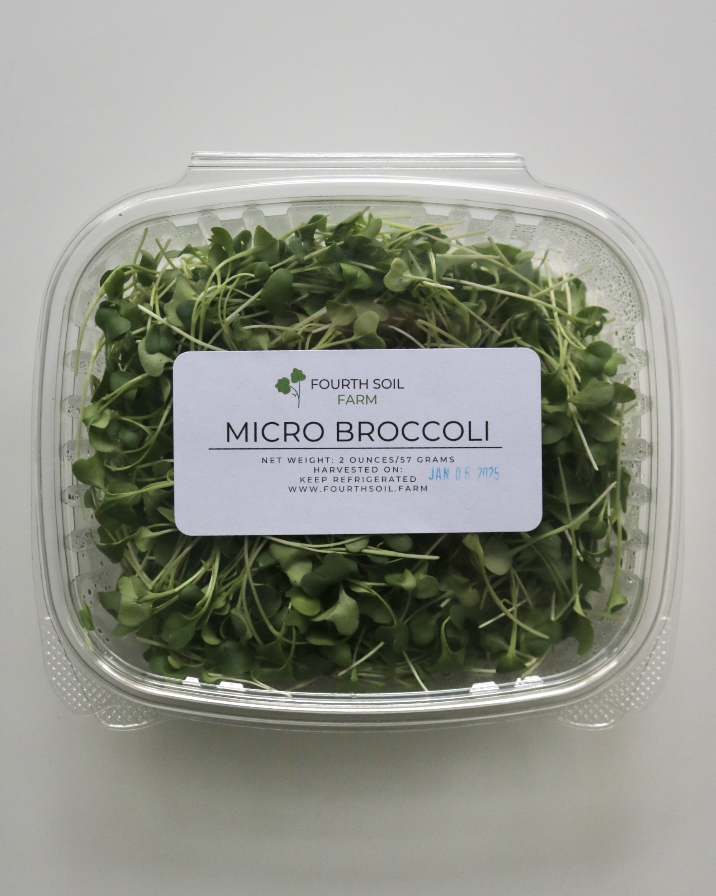
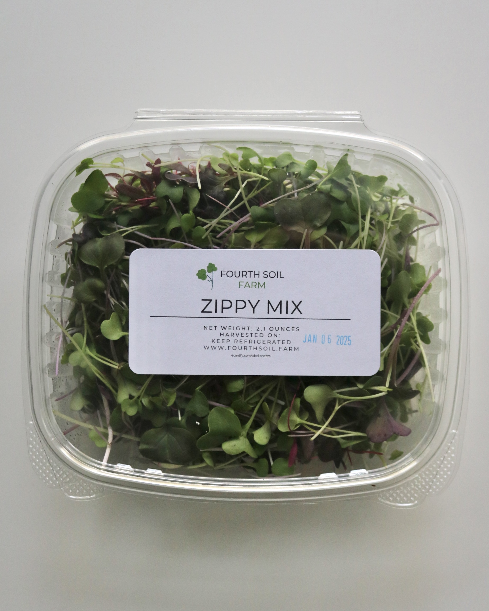
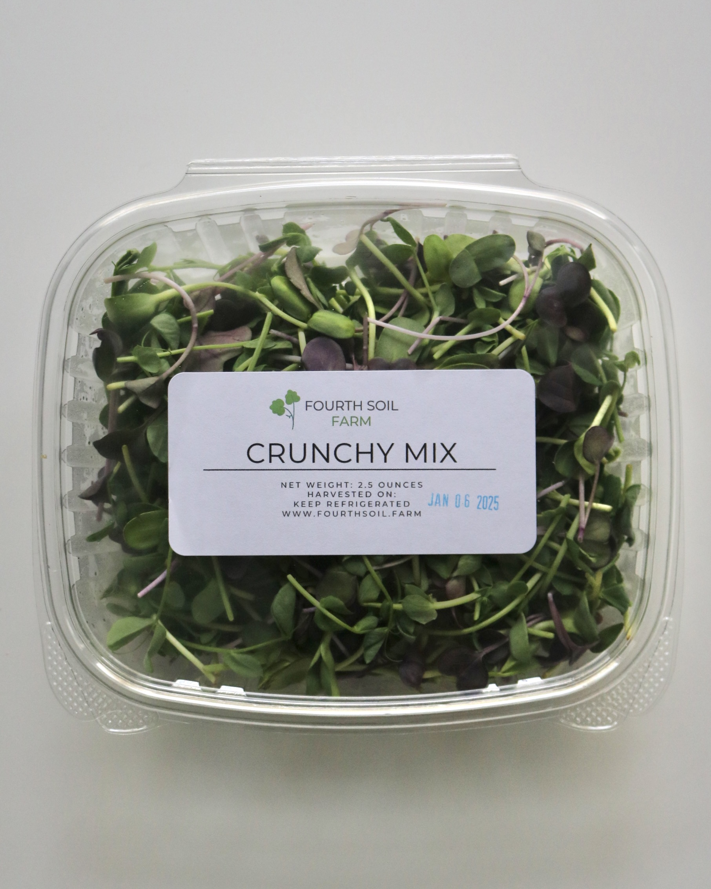
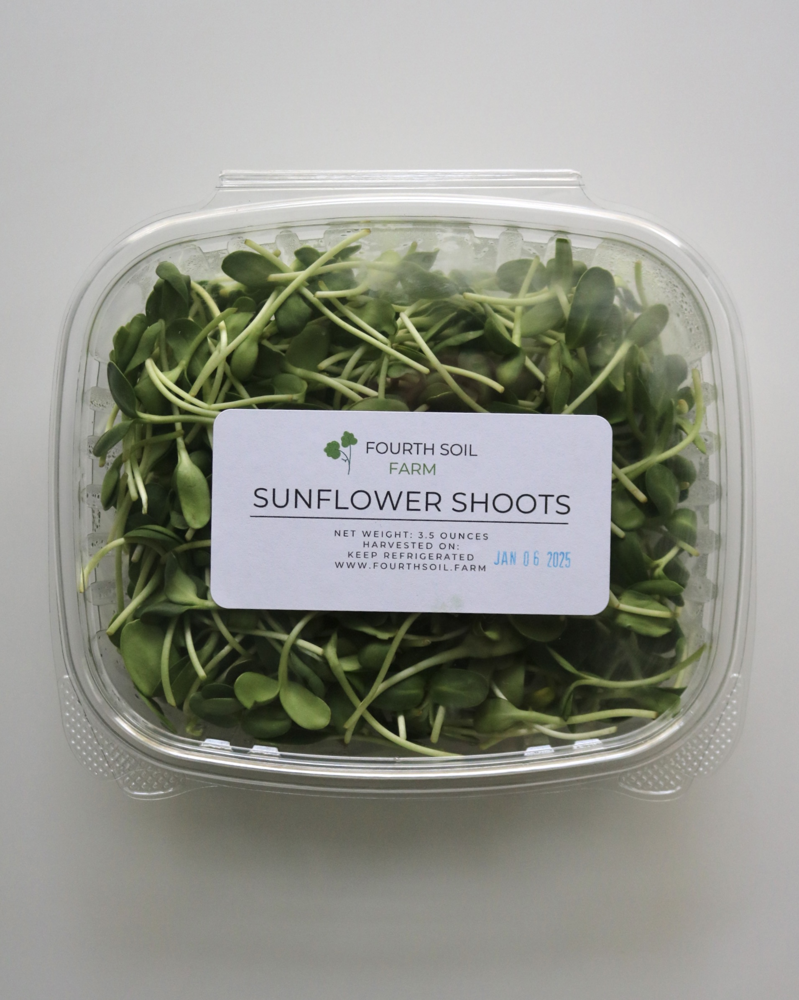
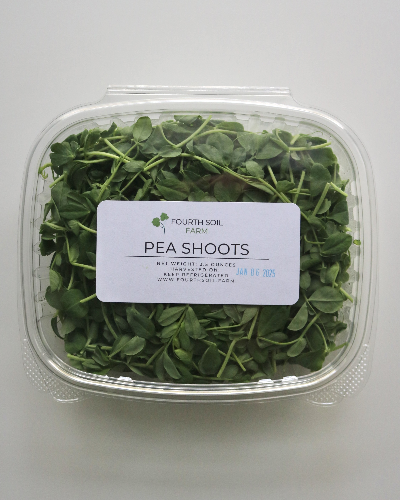
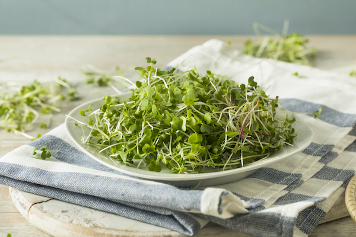
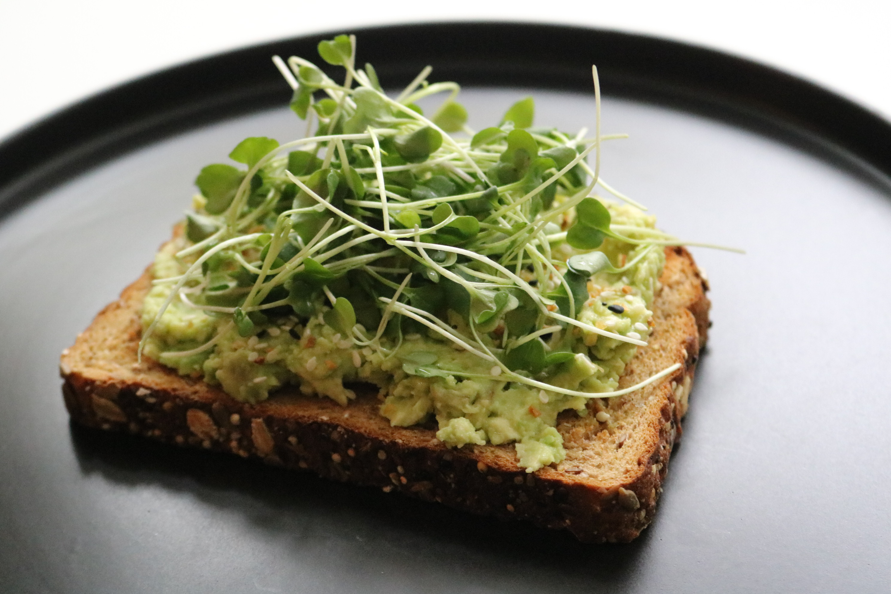
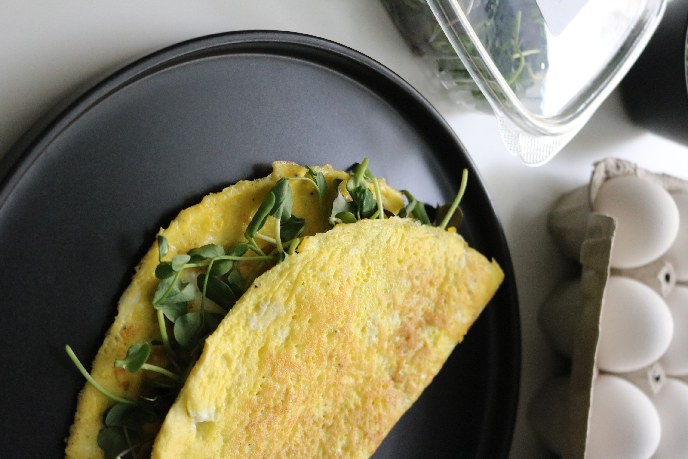

Locally Grown in Ypsilanti
Locally-Grown Microgreens Delivered To Your Doorstep
Do you live in the Ann Arbor area? Say hello to your new favorite locally-grown food that can be added to any meal for extra nutrition & taste.
Microgreens are up to 40X more nutrient-dense than mature greens like broccoli. They can help…
- Boost your immune system
- Lower inflammation
- Improve gut health
Hi! We’re Karl and Jeanne — welcome to Fourth Soil Farm.

Our farm, Fourth Soil Farm, is a small “direct to community” farm that offers quick home deliveries anywhere in the Ann Arbor area…
We specialize in growing nutrient-dense microgreens, harvested to order and delivered to your door in less than 24 hours — or find us in person at the Ann Arbor Farmers Market.
What Are Microgreens?
Microgreens are the earliest stage of a vegetable plant’s development, after the sprouting stage.
They are “living foods” — purposefully harvested at their most nutritious and delicious state.
In the photo below, you can see sprouts on the left, microgreens in the middle, and a more mature vegetable plant on the right:

Why Microgreens Are Healthier Than Regular Greens Like Lettuce, Spinach & Kale…
- Their nutrient content is more concentrated
- Boosts your immune system
- Lowers inflammation
- Can help contribute to weight loss
- Can help reduce the risk of various chronic diseases
- Improves gut health
- And much more!
What We Grow
Our Microgreens
Five of our most-loved varieties, grown to order, delivered fresh. Each clamshell is packed at harvest weight.

Broccoli
2 oz clamshell
Our most popular variety. Mild, tender, and loaded with sulforaphane.

Zippy Mix
2 oz clamshell
Broccoli, Radish, Arugula, Purple Kohlrabi & Red Garnet Amaranth.

Crunchy Mix
2.5 oz clamshell
Pea Shoots, Sunflower Shoots & Red Radish in one clamshell.

Sunflower Shoots
3.5 oz clamshell
Satisfying, slightly nutty, and surprisingly hearty.

Pea Shoots
3.5 oz clamshell
Sweet, tender, and crisp Speckled Pea shoots.
Restaurant & wholesale accounts welcome. We deliver every Friday or Saturday with no order minimum and no delivery fee. Reach out and we’ll build a plan around your kitchen.
Add Them To Virtually Every Single Meal…

Salads

Sandwiches & Wraps

Eggs & Grain Bowls
I encourage you to get creative and experiment with microgreens… they can add so much flavor, texture & color to your meals!
Placing a custom or wholesale order? Send us a note through the contact form below and we’ll personally reach out to arrange payment & delivery — that way we can get started growing your special order so that it’s ready when you’re ready.
For subscriptions and one-time orders, visit our Order page — it only takes a minute.
We look forward to growing for you!
Sincerely,
Karl and Jeanne
Get in Touch
We’d Love to Hear From You
Questions about subscriptions, wholesale, or just want to know more about what we grow? Send us a note and we’ll reply within one business day.
- Phone (734) 221-3971
- Email info@fourthsoil.farm
- Location Ypsilanti, MI — delivering to the Ann Arbor area
- Market Ann Arbor Farmers Market — see Instagram for schedule
The Full List
Every Variety We Grow
Beyond our five most-popular picks, we grow a wider selection for restaurant accounts and special orders. All catalog items are available on our Order form or by request — contact us for custom needs or wholesale pricing.
Spicy blend of Daikon, Ruby, and Triton radishes — vivid color and bold heat.
Delicate, sweet individual pea microgreen with elegant curling tendrils. Great as a garnish.
Rich purple color, mild flavor. Stunning visual accent for plating.
Bold, sharp heat with distinct Asian mustard flavor. Excellent on ramen, dumplings, and grain bowls.
Specialty. Intensely herbal and bright — concentrated cilantro flavor for tacos, salsas, and Asian dishes.
Specialty. Striking deep-red color with a mild, earthy flavor. A standout garnish for upscale plating.
Rotating blend of immune-supporting varieties. Availability varies by season — ask about current mix.
Peppery bite with a bright, fresh finish. A favorite in salads and on pizza just before serving.
Vivid purple stems with a mild, slightly sweet crunch. A standout color accent for plating.
Need a specific flavor profile or color palette? We’ll grow a custom blend to match your menu. Minimum order applies.
Sources
The Science Behind Microgreens
The health claims on this site aren’t just marketing — here’s the published research behind them.
- Assessment of Vitamin and Carotenoid Concentrations of Emerging Food Products: Edible Microgreens Journal of Agricultural and Food Chemistry
- Broccoli Microgreens: A Mineral-Rich Crop That Can Diversify Food Systems Frontiers in Nutrition
- Profiling Polyphenols in Five Brassica Species Microgreens by UHPLC-PDA-ESI/HRMSn Journal of Agricultural and Food Chemistry
- Red Cabbage Microgreens Lower Circulating LDL, Liver Cholesterol, and Inflammatory Cytokines in Mice Fed a High-Fat Diet Journal of Agricultural and Food Chemistry
- Polyphenols, Inflammation, and Cardiovascular Disease Current Atherosclerosis Reports
- Natural Polyphenols for Prevention and Treatment of Cancer Nutrients
- Fruit and Vegetable Intake and Risk of Cardiovascular Disease in US Adults American Journal of Clinical Nutrition
- Dietary Antioxidants in Disease Prevention Natural Product Reports
- Targeting Cancer Stem Cells with Sulforaphane, a Dietary Component from Broccoli and Broccoli Sprouts Future Oncology